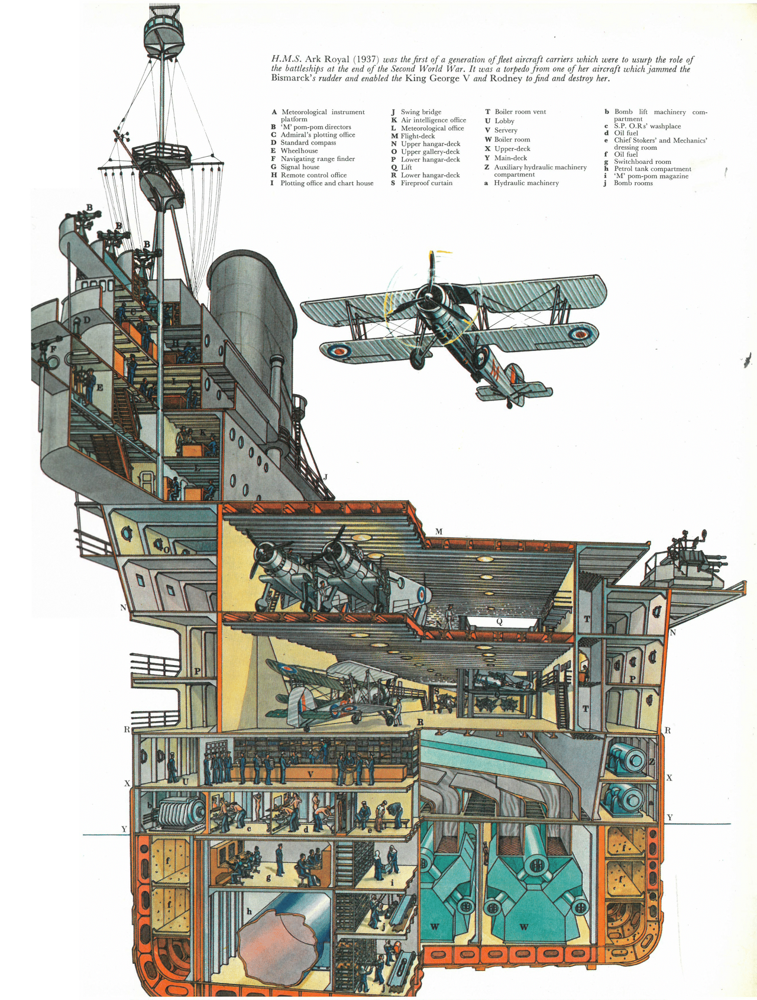
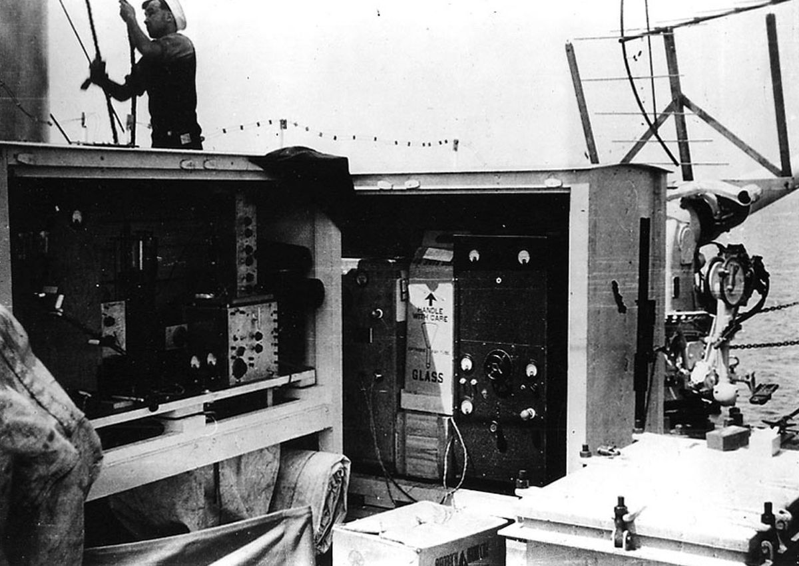
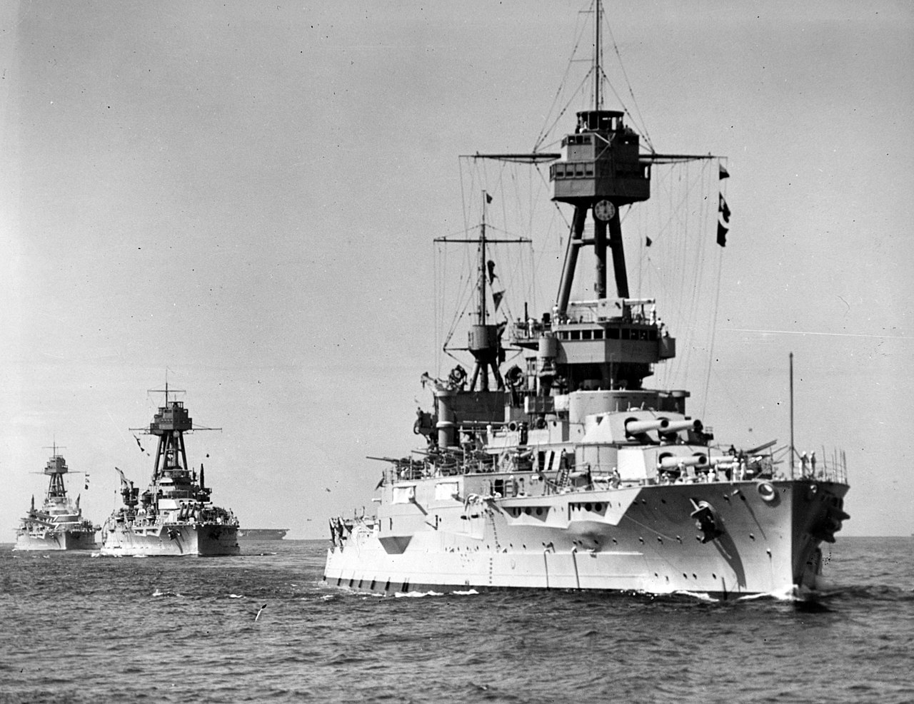
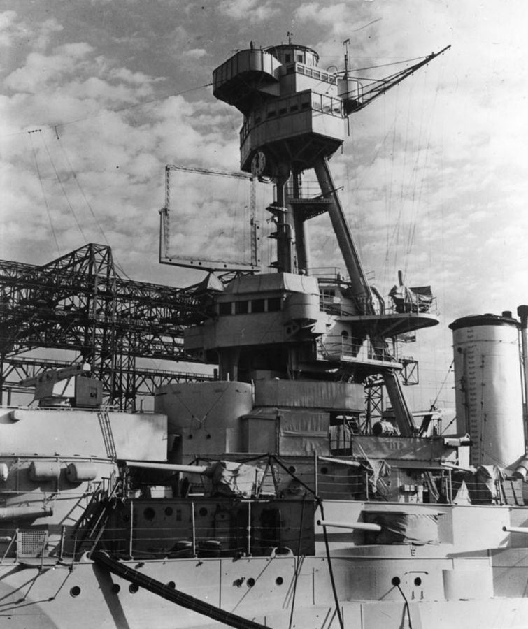
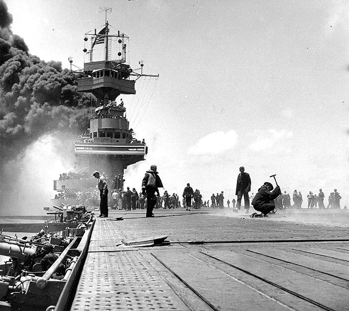
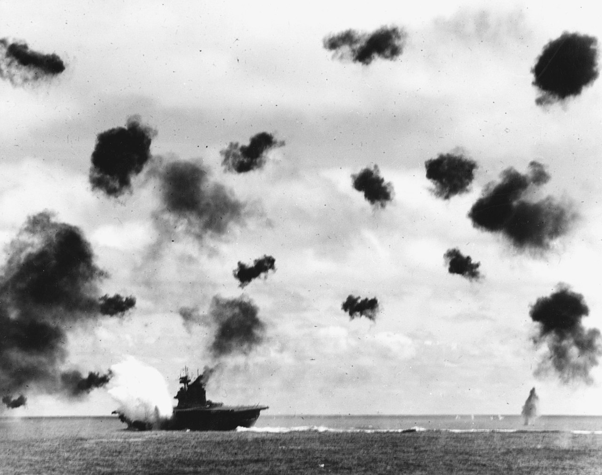

레이더 개발 이야기 (17) - 미드웨이 해전의 미국산 레이더
게시: 2023-01-19T06:30:03+09:00
<영국이 미국에게 레이더 기술을 전해주었을까> 영국과 미국은 같은 언어와 인종에 역사와 문화까지 어느 정도 공유하는 국가이므로 지금도 찰떡궁합으로 붙어다니는 사이. 하지만 WW2가 시작되고 군사 동맹이 되고 나서도 한동안은 군사기밀을 서로 감추고 있었음. 가령 항공모함에서 위험한 가솔린 항공유를 어떻게 보관해야 안전한지 로열네이비는 알고 있었지만 1940년까지도 미해군에게는 그걸 알려주지 않았음. 로열 에어포스가 형제의 나라 미국에게는 레이더 개발에 대해 힌트를 주었을까? 처음에는 전혀 주지 않았음. 그러나 이미 미해군은 레이더를 독자적으로 개발하고 있었음. 실은 1930년에 이미 그 가능성을 보고 이미 시작을 하고 있었음. 아래 그림은 HMS Ark Royal의 단면도. 1937년에 진수된 아크 로열은 전함 또는 전투순양함을 개조한 것이 아니라 처음부터 항공모함으로 설계된 본격적인 항공모함. 뱃바닥 왼쪽에 보면 h라고 표시된 커다란 하수관처럼 생긴 구조물이 함재기 연료인 가솔린 탱크. 당시 다른 나라의 항공모함들은 별 생각없이 항모 엔진용 연료인 중유 탱크처럼 가솔린 탱크도 그냥 선체의 일부 칸에 통합. 그에 비해 영국 해군 항모들은 별도의 원통형 탱크를 만들고 그 탱크가 들어있는 칸에 완충 및 밀봉 효과를 위해 바닷물을 가득 채움. 이를 몰랐던 미해군과 일본 해군은 항공모함이 피격될 때의 충격으로 가솔린 탱크에 작은 균열이 생기고 거기서 흘러나온 가솔린이 기화되면서 함체를 가득 채워 결국 대폭발을 일으키는 사고를 몇 차례 겪음. USS Lexington, USS Wasp, 그리고 일본해군 다이호도 다 그런 식으로 치명적이지 않은 피격을 당했다 나중에 가솔린 유증기에 의해 대폭발을 일으키고 침몰.

<왜 미국에서는 공군이 아니라 해군이 레이더 개발에 나섰을까> 당시 미군에는 공군이 없고 육군항공대 밖에 없었다는 이야기를 하려는 것이 아니라, 지리적 특성 때문임. 영국 공군이 레이더 개발에 나선 이유도 당장 나찌 독일로부터 공중 폭격을 당할 위협이 있었기 때문이었음. 그에 비해 미국은 당장 외국으로부터 침공받을 위험이 거의 없다보니 굳이 레이더를 만들 필요가 없었음. 당시의 레이더는 어디까지나 방공용이지 공격용이 아니었음. 1930년 6월 미해군 연구소 (Naval Research Laboratory)에서는 항공기 유도에 전파를 이용하는 연구를 수행하다 우연히 레이더의 원리를 발견. 그러나 미해군에서는 별 관심을 보이지 않았음. 1935년까지 미국 전체에서 레이더를 연구하던 사람은 딱 3명에 불과. 미해군이 레이더에 별 관심을 보이지 않았던 것은 전함 때문. 1930년 정도만 해도 항모가 전함을 젖히고 가장 중요한 무기가 될 것이라는 상상을 하기 어려웠음. 그래도 미해군은 일본이나 독일의 전함과 순양함을 좀더 빨리, 그리고 좀더 멀리서 탐지하는 기술이 있다면 좋아했을 것임. 그러나 그다지 적극적이지 않았음. 이유는 radar horizon. 높은 공중에 떠있는 항공기는 수평선 너머 수십 km 먼 하늘에서도 레이더에 잡혔지만, 해수면에 떠있는 전함은 수평선 너머에서는 보이지 않음. 그러니 눈으로 보나 레이더로 보나 (전함 높이에 따라) 대략 30km 정도까지가 한계. 눈으로 보면 되는데 굳이 거추장스럽고 돈 많이 들어가는 레이더를 달 이유가 절박하지는 않았음.

(구축함 USS Leary에서 1937년도 수행된 레이더 시제품 실험. 레이더 안테나를 5인치 포신에 붙여 놓았는데, 방향 전환이나 앙각 조절에 군함 포탑처럼 편리한 것이 없었다고. 그 뒤 갑판에 설치된 것이 레이더 전파 송신기와 수신기.)
그러나 1935년부터는 연구에 좀더 많은 자금과 인원이 투입되기 시작. 해전에서도 항공기가 중요해지기 시작했고, 야간이나 짙은 안개 속에서도 적함을 찾는 것이 도움이 되었기 때문. 이렇게 돈을 쓰기 시작하자 곧 성과를 내기 시작하여 1937년에는 구축함 USS Leary(사진1)에서, 그리고 다음 해인 1938년에는 구형 전함 USS New York (사진2)에 레이더 시제품을 장착하고 테스트에 돌입.

(전함 USS New York은 맨 오른쪽의 선두함. 배수량 2만8천톤, 최대 속도 21노트로서 1911년 진수된 구형 저속 전함이고 원래는 석탄 때는 보일러를 쓰다가 나중에 중유 보일러로 교체. 그래도 저 14인치 함포는 WW2 중에 각종 상륙전에 매우 요긴하게 사용됨.)

(이 사진에서 USS New York의 전망대 삼각 기둥 앞에 장착된 거대한 사각틀 같은 것이 레이더 시제품 XAF의 안테나. 그 결과는 상당히 만족스러워 뉴욕의 14인치 주포 사격을 모니터링 해보니 그 포탄의 궤적까지 포착됨.)
이에 미해군은 항공모함부터 시작하여 주요 대형 함정에 레이더를 장착하기로 결정.
<미드웨이 해전에서의 레이더> 미드웨이 해전에 참전했던 USS Yorktown (CV-5, 2만6천톤, 32노트)는 1940년 초기 레이더인 CXAM radar를 장착. X자가 붙었듯이 이건 초기형 시제품 레이더로서 요크타운을 포함한 6척의 군함에만 장착됨. 이 레이더가 도움이 되었을까? 무진장 되었음. 가령 미드웨이 해전 당일, 일본 항공모함들은 딱 1~2방씩의 폭탄만 얻어맞고도 대폭발을 일으키며 결국 자침. 이유는 다들 아시다시피 폭탄을 어뢰로 바꿔다는 와중에 아무 경보 없이 미군 돈틀리스의 습격을 받았기 때문. 애초에 폭탄을 얻어 맞았던 이유도 CAP(Combat Air Patrol)을 치던 일본 제로기들이 먼저 저공으로 습격해온 미군 뇌격기들을 잡겠다고 저공에 내려와 있는 상태여서, 뒤에 고공으로 쳐들어온 급강하 폭격기 돈틀리스들에게 제때 대응을 못했기 때문. 일본 해군에도 레이더가 있었다면 돈틀리스들의 내습을 눈치채고 미리 고공으로 올라가 대기하고 있었을 것임. 그에 비해 요크타운은 크게 달랐음. 일본 항모 3척이 격침된 뒤, 남은 히류에서 날아온 일본 폭격기들이 습격해올 때, 요크타운의 레이더는 이를 육안으로 포착하기 훨씬 전에 이미 감지. 그래서 급유 중이던 전투기들도 완전히 급유를 마치기 전에 날려보내고, 갑판 위에 노출된 3천 리터짜리 급유탱크는 뱃전으로 던져 버리고, 모든 호스에서 가솔린을 제거하고, 심지어 착륙하겠다고 선회 중이던 돈틀리스 폭격기들에게도 착륙하지 말고 전투기처럼 CAP을 치라고 명령. 뿐만 아니라 전투기들은 일본기들이 날아오는 방향으로 20~30km 바깥까지 날아가 원거리에서 격추 시도. 그러고도 처음에는 3발의 폭탄, 그리고 그 뒤에 다시 감행된 공습에서 2발의 어뢰를 더 맞았으나, 그렇게 5발을 맞고도 요크타운은 대폭발을 일으키지 않고 살아남음. 이건 레이더가 없었다면 불가능했을 수 있는 damage control. 다만 그 뒤에 일본군 잠수함이 쏜 어뢰 2발을 맞고 비로소 꼬로록....

(첫번째 공습에서 폭탄을 얻어맞은 장면)

(두번째 공습에서 뇌격기의 어뢰를 얻어맞는 순간)